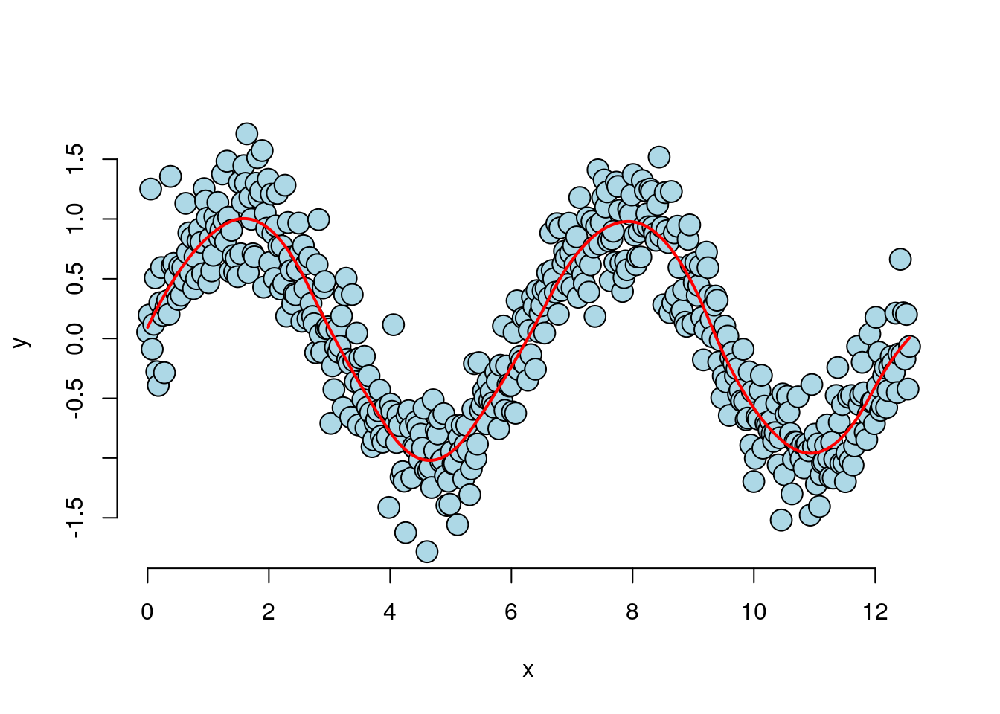
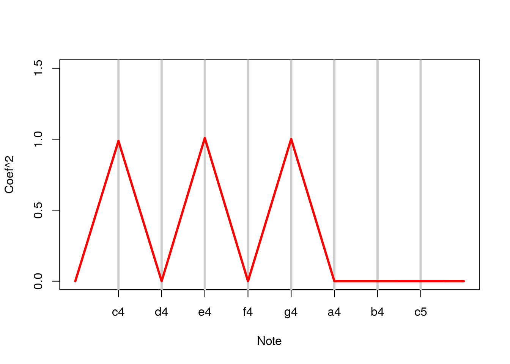

Chapter 4 Week 04
4.1 GLM
Generalized linear models (GLMs) were a great advance in statistical modeling. The original manuscript with the GLM framework was from Nelder and Wedderburn in 1972 in the Journal of the Royal Statistical Society. The McCullagh and Nelder book is the famous standard treatise on the subject.
Recall linear models. Linear models are the most useful applied statistical technique. However, they are not without their limitations. Additive response models don’t make much sense if the response is discrete, or strictly positive. Additive error models often don’t make sense, for example, if the outcome has to be positive. Transformations, such as taking a cube root of a count outcome, are often hard to interpret.In addition, there is value in modeling the data on the scale that it was collected. Particularly interpretable transformations, natural logarithms in specific, are not applicable for negative or zero values. The generalized linear model is family of models that includes linear models. By extending the family, it handles many of the issues with linear models, but at the expense of some complexity and loss of some of the mathematical tidiness. A GLM involves three components: * An exponential family model for the response. * A systematic component via a linear predictor. * A link function that connects the means of the response to the linear predictor. The three most famous cases of GLMs are: linear models, binomial and binary regression and Poisson regression. We will go through the GLM model specification and likelihood for all three. For linear models, we have developed them previously. The next two modules will be devoted to binomial and Poisson regression. We will only focus on the most popular and useful link functions.
In this section, we are transitioning from linear additive response models to the broader class of generalized linear models (GLMs). While linear models are immensely useful in applied statistics, they have limitations, especially when dealing with certain types of data. GLMs address some of these challenges, but they may sacrifice some mathematical elegance that linear models offer. Linear models assume additivity, which can be challenging to apply to binary data. Considering binary data as additive might lead to awkward interpretations of the error structure. Additionally, when dealing with strictly positive data, the assumption of additive Gaussian errors can be problematic as it allows for positive mass on negative values. While this might not be an issue in some cases, it becomes problematic if the normal distribution assigns a significant positive probability to negative values, contradicting the known positivity of the response. Transformations are a common strategy to handle strictly positive data. For example, taking the natural logarithm is often used, providing interpretability to the coefficients. However, other transformations, like the arcsine or square root transformation for binomial data, can compromise interpretability. One reason to consider generalized linear models is to avoid the need for transformations and to work directly with the scale in which the data was recorded. GLMs can respect the inherent characteristics of the data, especially when dealing with binary outcomes. The natural log transformation is frequently used, but has challenges when applied to negative or zero values, leading to the development of alternative methods. Generalized linear models were introduced in a 1972 paper by Nelder and Wedderburn, a seminal work in the field of statistics that has been widely read by PhD statisticians. GLMs provide a versatile framework for addressing the limitations of linear models and handling various types of response variables.
A generalized linear model (GLM) comprises three essential components:
Distribution (Random Component): The randomness in the model is described by a specific family of distributions known as the exponential family. This family includes various distributions like normal, binomial, and Poisson. The choice of the distribution depends on the nature of the response variable.
Systematic Component (Linear Predictor): This component involves the linear predictor, which is the part of the model being estimated. This component corresponds to what we modeled in linear models, where the systematic component was the linear combination of covariates with their coefficients.
Link Function: The link function connects the linear predictor to the distribution of the response variable from the exponential family. It essentially transforms the linear predictor into a scale that makes sense for the chosen distribution.
Suppose we assume that the response variable \(Y_i \sim N(\mu_i, \sigma^2)\) is normally distributed with mean \(\mu\). We define the linear predictor to be \(\eta_i = \sum_{k=1}^p X_{ik} \beta_k\), and the link function as \(g\), identity link function, so that \(g(\mu) = \eta\) and \(\mu_i = \eta_i\). This yields the same likelihood model as our additive error Gaussian linear model \[Y_i = \sum_{k=1}^p X_{ik} \beta_k + \epsilon_{i}\] where \(\epsilon_i \stackrel{iid}{\sim} N(0, \sigma^2)\).
To summarize, in this case: - Distribution: The exponential family is represented by the normal distribution. - Systematic Component (Linear Predictor): The linear predictor, denoted as η (eta), is defined as the sum of covariates (xi) multiplied by their coefficients (beta): ηi = ∑(xi * beta). - Link Function: For simplicity, we can choose the identity link function, which directly connects the linear predictor (η) to the mean (Mu) of the normal distribution. This link function implies that Mu is exactly equal to the linear predictor: Mu = η.
The GLM framework allows us to extend the modeling approach beyond linear models by incorporating different distributions, systematic components, and link functions tailored to the characteristics of the response variable.
Let’s delve into logistic regression, perhaps the most useful variation of generalized linear models when dealing with binary data (0s and 1s). Since binary outcomes don’t conform to a normal distribution, we employ a Bernoulli distribution, assuming that our outcomes (Y) follow this distribution. In a Bernoulli distribution, we model the probability of a head (or success) for each observation. This probability is represented by \(E[Y_i]=\mu_i\), where the linear predictor remains the sum of covariates multiplied by their coefficients\(\eta_i = \sum_{k=1}^p X_{ik} \beta_k\). The link function used in logistic regression is the logistic link function, which transforms the probability of success (\(\mu\)) into the log odds (log of the odds ratio). \(g(\mu) = \eta = \log\left( \frac{\mu}{1 - \mu}\right)\).Mathematically, this link function is expressed as the natural logarithm of the odds: \(g(\mu) = \eta = \log\left( \frac{\mu}{1 - \mu}\right)\). The logistic link function connects the linear predictor (\(η\)) to the log odds. To go from the log odds back to the probability (\(\mu\)), we use the inverse of the logistic link function. The inverse logistic function, sometimes referred to as the “logit,” is given by:
\[ \mu_i = \frac{\exp(\eta_i)}{1 + \exp(\eta_i)} ~~~\mbox{and}~~~ 1 - \mu_i = \frac{1}{1 + \exp(\eta_i)} \]
It’s important to note that this transformation applies to the mean or probability of success (\(\mu\)) rather than directly transforming the binary outcomes (Y) themselves. This distinction is a key aspect of generalized linear models, where the focus is on modeling the underlying probabilities or means associated with the observed outcomes. Given the information the likelihood is: \[ \prod_{i=1}^n \mu_i^{y_i} (1 - \mu_i)^{1-y_i} = \exp\left(\sum_{i=1}^n y_i \eta_i \right) \prod_{i=1}^n (1 + \eta_i)^{-1} \] It’s through this likelihood that parameter estimates are optimized by maximizing it.
Let’s discuss another example, Poisson regression. Poisson distribution is suitable for count data, which is often unbounded and positive. The Poisson regression assumes that the response variable Y follows a Poisson distribution with the expected value \(\mu_i\). The linear predictor is again the sum of covariates multiplied by their coefficients, \(\eta_i = \sum_{k=1}^p X_{ik} \beta_k\). The log link function is commonly used in Poisson regression, \(g(\mu) = \eta = \log(\mu)\). Recall that \(e^x\) is the inverse of \(\log(x)\) so that \(\mu_i = e^{\eta_i}\). The inverse of the natural logarithm is applied to go from the mean (\(\mu\)) to the linear predictor (\(η\)). Thus, the likelihood is \[ \prod_{i=1}^n (y_i !)^{-1} \mu_i^{y_i}e^{-\mu_i} \propto \exp\left(\sum_{i=1}^n y_i \eta_i - \sum_{i=1}^n \mu_i\right) \] The likelihood function for Poisson regression is formulated based on this distribution and the linear predictor. In generalized linear models, the parameters are estimated by maximizing the likelihood function. This is akin to finding roots or solutions of equations, similar to least squares in linear regression.
All models achieve their maximum at the root of the so called normal equations \[ 0=\sum_{i=1}^n \frac{(Y_i - \mu_i)}{Var(Y_i)}W_i \] where \(W_i\) are the derivative of the inverse of the link function.
The MLE equation for generalized linear models, presented above, involves weights and variances in the denominator, emphasizing that the fitting process is a bit more complex than least squares. While these details are interesting from a statistical perspective, for practical purposes and interpretation of generalized linear models, understanding the conceptual framework, link functions, and likelihood is often sufficient. It’s important to note that for cases like Poisson and binomial, the variance is not constant across observations, unlike the linear model case. In the Poisson case, the variance of a Poisson distribution equals its mean. Therefore, in this scenario, the Poisson distribution has a variance that differs by \(i\). This assumption in modeling can be verified. For instance, if you have Poisson data with multiple observations at the same covariance level, the means should be equal. Consequently, the variances of these observations should be approximately equal to the mean. If your data doesn’t demonstrate this pattern, it poses an issue. This is a crucial and practical consideration in generalized linear models, where modeling assumptions often impose a constraint on the relationship between the mean and variance. However, this relationship may not hold in your specific dataset.
To address this issue, there is a method involving a more flexible variance model, albeit at the cost of sacrificing some generalized linear model assumptions. Standard options include quasi-Poisson and quasi-binomial distributions, which are available in statistical languages fitting generalized linear models. These quasi versions offer a more flexible variant structure, accommodating data that deviates from the typical GLM variant structure.
Moving on to the fitting process, it’s essential to note that GLMs require iterative optimization, unlike linear models, which allow for straightforward solutions through linear algebra. Consequently, program failures may occur, especially in cases like binary regression with numerous zeros or ones. Before delving into specific cases, such as Poisson and Binomial, it’s crucial to understand that these equations need iterative solutions. Although we won’t cover the full spectrum of GLMs, the process involves solving equations iteratively. For instance, if you wish to obtain the predicted response, you would multiply the estimated coefficients (\(\hat \beta\)) by the regressors, yielding the predictive response. It’s important to recognize that this response will be on the log-odds scale for logistic regression or the log scale for Poisson regression. To align it with the original data scale, a conversion to the natural scale is necessary. For example, if you’re modeling coin flips and you obtain regression coefficients to predict responses, those predictions will be on the log-odds scale. To bring them back to the scale of coin flips (binary outcomes between zero or one), you’ll need to invert the log-odds. The coefficients are interpreted similarly to linear regression coefficients, representing the expected change in the response for a unit change in the regressors, with other regressors held constant. However, this interpretation is now done on the scale of the linear predictor: log-odds for the binomial case and log-mean for the Poisson case. Though the interpretation is slightly more complex, the benefit lies in modeling the data on its natural scale without transforming the outcome.
In terms of inference, you lose the convenience of closed-form normal inferences and t-distributions. However, statisticians have determined the appropriate distributions for comparing coefficients and obtaining p-values through the GLM output. The testing and interpretation of coefficients remain similar to linear regression, but the underlying mathematics is more involved. It’s essential to note that these results are based on asymptotics, requiring larger sample sizes. In cases with small sample sizes, p-values may not be applicable.
This overview provides a glimpse into GLMs. In the upcoming sections, the focus will shift to the two crucial cases: binomial and Poisson regression, specifically logistic regression for binary outcomes.
4.2 Logistic Regression
Binary GLMs come from trying to model outcomes that can take only two values. Some examples include: survival or not at the end of a study, winning versus losing of a team and success versus failure of a treatment or product. Often these outcomes are called Bernoulli outcomes, from the Bernoulli distribution named after the famous probabilist and mathematician.
If we happen to have several exchangeable binary outcomes for the same level of covariate values, then that is binomial data and we can aggregate the 0’s and 1’s into the count of 1’s. As an example, imagine if we sprayed insect pests with 4 different pesticides and counted whether they died or not. Then for each spray, we could summarize the data with the count of dead and total number that were sprayed and treat the data as binomial rather than Bernoulli.
In this section, the focus is on scenarios where the outcome is a binary random variable, taking values of zero or one. Such situations arise frequently in various analyses, such as survival studies where individuals are either alive or deceased at the study’s conclusion, or in sports analytics, where wins or losses are recorded. The goal is to model the data as a series of coin flips, where the probability of success depends on a set of covariates. When dealing with collections of zeros and ones with a constant success probability and independence, the total number of successes or failures follows a binomial distribution. Binary logistic regression is employed to handle binomial random variables in the special case where the covariate is constant. Here we will cover two cases: binary and binomial, with the focus initially on the binary case. To illustrate, a motivating example is presented using a dataset organized by Jeff Leak, an instructor in the data science specialization.
download.file("https://raw.githubusercontent.com/B7M/Course_data/main/ravensData.csv"
, destfile="ravensData.csv",method="auto")
ravensData <- read.csv("ravensData.csv")
head(ravensData)## ravenWinNum ravenWin ravenScore opponentScore
## 1 1 W 24 9
## 2 1 W 38 35
## 3 1 W 28 13
## 4 1 W 34 31
## 5 1 W 44 13
## 6 0 L 23 24The dataset involves the Ravens’ football team, where wins and losses are coded as ones and zeros, respectively. The analysis explores the extent to which the Ravens’ score predicts their winning outcomes. Linear regression is not suitable for this type of data. Attempting to model the probability of a Ravens win as a linear progression would not accurately capture the underlying relationships. While fitting binary data with a linear model is sometimes a preliminary step, it is typically followed by more appropriate models like logistic regression. The potential issues with fitting binary data using linear regression include: * $ RW_i = b_0 + b_1 RS_i + e_i $ * \(RW_i\) - 1 if a Ravens win, 0 if not * \(RS_i\) - Number of points Ravens scored * \(b_0\) - probability of a Ravens win if they score 0 points * \(b_1\) - increase in probability of a Ravens win for each additional point * \(e_i\) - residual variation due
While it’s not the worst thing to fit binary data with linear regression, especially for quick analyses, a preferable approach is to model the odds. In the context of binary outcomes, such as whether the Ravens win, the goal is to model the probability of winning as if it were a series of coin flips. The success probability varies from game to game based on factors like the points the Ravens score. The odds, denoted as the probability over one minus the probability, capture this relationship. The odds can be converted back to probability and vice versa. To quantify the odds, the log odds, also known as the logit, which is introduced as the logarithm of the odds the model is placed on the logit scale. Logistic regression is preferred over linear regression due to the clear violation of linear regression assumptions and the potential inaccuracies in inferences. To draw a connection between the two, linear regression models can be expressed as the expected value of the outcome being a linear relationship. In the case of binary outcomes, the expected value is the probability, highlighting the transition from linear to logistic regression. The logistic regression model involves predicting the log odds, allowing for a more appropriate representation of binary data. The expected value of a fair coin is 0.5, and instead of directly modeling the expected value of the outcome in logistic regression, the approach is to model the expected value, which is the probability, using the equation exp(the linear regression) over 1 + exp(the linear regression). When this equation is inverted, it results in the log of the odds being the linear regression relationship. In binary generalized linear models, particularly in logistic regression, the data is treated as a series of coin flips with changing success probabilities related to covariates. The log of the odds, also known as the logit, is crucial in this modeling process.
The function that goes backward from the log of the odds to the probability is referred to as the xbit, and \(\frac{e^a}{1 + e^a}\) represents this inversion. The clever aspect of generalized linear models lies in not directly placing the model on the scale but recognizing the dependence on a probability distribution, which, in turn, is influenced by the success probability that is connected to regressors.
Interpreting logistic regression is straightforward. \[ \log\left(\frac{\rm{Pr}(RW_i | RS_i, b_0, b_1 )}{1-\rm{Pr}(RW_i | RS_i, b_0, b_1)}\right) = b_0 + b_1 RS_i \] If the Ravens score is zero, the log odds (\(b_0\)) represent the log odds of a Ravens win. The probability of winning can then be calculated using \(\frac{e^{b_0}}{1 + e^{b_0}}\). However, an imperfect aspect arises when b0 is estimated to be non-zero, despite the team not being able to win with zero points. The slope coefficient (b1) is interpreted as the increase or decrease in the log odds of the probability associated with a one-unit increase in the regression variable (in this case, a one-point increase in score). If we exponentiate the difference on the log scale in logistic regression, we obtain a ratio on the original scale. Exponentiating \(e^{b_1}\) results in \(e^{b_1}\) being the ratio of the odds, comparing the odds of the Ravens winning for a one-point increase in the score. While there may not be multiple regressors in this particular example, the extension to cases with multiple covariates is direct. The interpretation remains consistent with holding the other regression variables fixed, just like in linear regression. In logistic regression, everything is interpreted under the assumption that other covariates are constant. For instance, if additional covariates, such as whether it was a home or away game, were present, \(e^{b_1}\) would represent the odds ratio of a Ravens win for a one-unit increase in the score, holding the status of the game (home or away) constant. The interpretability of logistic regression coefficients is straightforward due to the logarithmic function, which allows the inversion of additive effects into ratios. This interpretation in terms of ratios is convenient and aligns well with how people naturally discuss relationships.
A brief historical note on odds: It originates from the concept of a fair game. Consider a scenario where you flip a coin with a success probability p, winning X dollars if it lands heads, and losing Y dollars if it lands tails. To make the game fair, the expected earnings (winning given heads minus losing given tails) should be equal to zero. Solving for fairness leads to the relationship \(\frac{Y}{X} = \frac{p}{1 - p}\). This equation implies that odds can be seen as how much one would be willing to pay for a p probability of winning a dollar. In summary, the concept of odds is deeply rooted in the idea of a fair game, where \(\frac{Y}{X} = \frac{p}{1 - p}\) when X is set to 1. This ratio determines how much one would be willing to pay for a certain probability of winning a dollar. For instance, at a horse track, odds like 10 to 1 indicate that if you bet a dollar and the horse wins, you receive $10. The setting of horse betting probabilities adapts as bets come in, reflecting a balance of money in and out to ensure the house neither wins nor loses. Over time, the aggregate odds from betting often serve as a fairly accurate representation of the percentage of times a horse wins.
Casinos or tracks make money by taking a fee for every bet, ensuring they are financially neutral regardless of the outcome. This fee ensures that the house is guaranteed to win, making the phrase “the house wins” quite literal. The complexity of the betting system involves various factors, but the basic principle remains: the house sets up odds to be financially neutral and takes a small fee from each bet.
Run this in RStudio which is a demonstration using the manipulate package in R, logistic regression curves are visualized with varying values of beta0 (intercept) and beta1 (slope). At the time of developing this course, the manipulate package was not available in OTTR. However, the code is provided for students to run in RStudio.
library(manipulate)
x <- seq(-10, 10, length = 1000)
manipulate(
plot(x, exp(beta0 + beta1 * x) / (1 + exp(beta0 + beta1 * x)),
type = "l", lwd = 3, frame = FALSE),
beta1 = slider(-2, 2, step = .1, initial = 2),
beta0 = slider(-2, 2, step = .1, initial = 0)
)The logistic regression curve resembles an ‘s’ shape, and changes in beta1 result in alterations in the curve’s shape—becoming more peaked for higher values and flipping around for negative values. The beta0 parameter shifts the curve left or right along the x-axis. If the x-axis represents regressors with zeros and ones, R attempts to find the logistic curve that best aligns with the associated probabilities. The principle behind this is maximum likelihood estimation. The logistic regression model, represented as \(\frac{e^{(\beta_0 + \beta_1x)}}{1 + e^{(\beta_0 + \beta_1x)}}\), is used to convert the logistic curve back to the probability scale.
Essentially, logistic regression aims to find the best-fitting curve by adjusting \(\beta_0 ,\beta_1\) values. The fitted function captures the logistic regression model on the probability scale. This visualization helps illustrate the underlying process of logistic regression and how R optimizes the logistic curve to match the observed data probabilities.
Now that we have examined the logistics regression curves, let’s explore the outcomes when we apply these curves to our Ravens data. To do this, you use the GLM function to feed the Ravens data.
logRegRavens <- glm(ravensData$ravenWinNum ~ ravensData$ravenScore,family="binomial")
summary(logRegRavens)##
## Call:
## glm(formula = ravensData$ravenWinNum ~ ravensData$ravenScore,
## family = "binomial")
##
## Deviance Residuals:
## Min 1Q Median 3Q Max
## -1.7575 -1.0999 0.5305 0.8060 1.4947
##
## Coefficients:
## Estimate Std. Error z value Pr(>|z|)
## (Intercept) -1.68001 1.55412 -1.081 0.28
## ravensData$ravenScore 0.10658 0.06674 1.597 0.11
##
## (Dispersion parameter for binomial family taken to be 1)
##
## Null deviance: 24.435 on 19 degrees of freedom
## Residual deviance: 20.895 on 18 degrees of freedom
## AIC: 24.895
##
## Number of Fisher Scoring iterations: 5The glm function function is similarly to the lm function, with the response variable on the left side of the tilde and the predictors on the right side. The key difference here is that we need to specify “family equals binomial” to inform the glm function that we are working with binary data (0,1). If dealing with count data or real binomial data, a sample size would also need to be specified. By default, for binomial and binary cases, the glm function assumes the logistic link function, which is appropriate.
When reviewing the summary output, it mirrors the format used for the lm function. The coefficients for the Ravens data are displayed, such as -1.68 and 0.1 for the intercept and Ravens coefficient, respectively. On the Logit scale, it’s important to examine whether the coefficients are close to zero for variables like the Ravens score, and on the exponentiated scale, whether they are close to one. The summary includes standard errors, Z values, and P values, which are interpreted similarly to a linear model, recognizing the differences in interpretation.
plot(ravensData$ravenScore,logRegRavens$fitted,pch=19,col="blue",xlab="Score",ylab="Prob Ravens Win")
curve(exp(-1.68 + 0.1*x)/(1 + exp(-1.68 + 0.1*x)),add=TRUE,col="red")
The fitted curve represents the predicted responses converted back to the probability scale. R calculates this by substituting the x values associated with the coefficients, multiplying them by the respective coefficients, adding the estimated intercept, and applying the logistic function. The result is the probability values. It’s crucial to note that the displayed fitted S curve is only a portion, as the component where the data are observed is restricted. The S curve depicted earlier has a starting point at one, resembling a curve that ascends and eventually descends, concluding at 0.4 instead of zero. This signifies the actual curve fitting the data, although the displayed fitted values only show a portion of it. Exponentiating the Ravens coefficients yields 0.1864 for the intercept and 1.1125 for the score, indicating an 11% increase in the probability of winning for each additional point the Ravens score. Interpreting this logistic regression coefficient involves assessing the odds ratios. Confidence intervals for these coefficients are easily obtained using the confint operator. The preferred method for viewing these intervals on the exponentiated scale involves using the x function to exponentiate the two endpoints.
exp(logRegRavens$coeff)## (Intercept) ravensData$ravenScore
## 0.1863724 1.1124694exp(confint(logRegRavens))## Waiting for profiling to be done...## 2.5 % 97.5 %
## (Intercept) 0.005674966 3.106384
## ravensData$ravenScore 0.996229662 1.303304The resulting interval, ranging from 0.99 to 1.3, suggests that despite the established influence of scoring points on the Ravens’ game outcomes, this coefficient is not statistically significant.
The ANOVA function operates similarly to lm, taking the output of the fitted model and accommodating multiple models, including nested ones. It performs sequential tests, and in this case, a one Degree of Freedom test is conducted for the score variable, although its utility is limited in this specific example. ANOVA becomes more valuable when assessing several models or dealing with factor variables. It helps determine if a factor variable should be included or excluded, considering all levels collectively, in contrast to the independent testing of each level when using the summary function.
anova(logRegRavens,test="Chisq")## Analysis of Deviance Table
##
## Model: binomial, link: logit
##
## Response: ravensData$ravenWinNum
##
## Terms added sequentially (first to last)
##
##
## Df Deviance Resid. Df Resid. Dev Pr(>Chi)
## NULL 19 24.435
## ravensData$ravenScore 1 3.5398 18 20.895 0.05991 .
## ---
## Signif. codes: 0 '***' 0.001 '**' 0.01 '*' 0.05 '.' 0.1 ' ' 1When interpreting odds ratios, it’s crucial to note that they represent functions of probabilities, not probabilities themselves. An odds ratio of one indicates no difference, while on the Logit scale, a log odds ratio of zero implies no difference. Understanding these nuances is essential in the interpretation of logistic regression coefficients. An odds ratio below 0.5 or above 2 is often considered indicative of a strong effect. However, the significance of these values depends heavily on the context. In fields like epidemiology, where studies often involve noisy factors like nutrition and its impact on health, even a small odds ratio such as 1.01 might be significant in large-scale studies. On the other hand, in tightly controlled experimental clinical trials, larger odds ratios may be required to deem an effect meaningful. While the benchmarks of less than 0.5 or greater than 2 provide some guidance, their utility is limited and varies based on the scientific context.
The relative risk is another metric similar to the odds ratio and is favored by those who think more intuitively in terms of probabilities \(\frac{\rm{Pr}(RW_i | RS_i = 10)}{\rm{Pr}(RW_i | RS_i = 0)}\). It represents the ratio of two probabilities. Unlike odds ratios, relative risk introduces some model constraints, making relative risk regression less common for binary variables. In cases with small probabilities, the relative risk can approximate odds ratios, leading some to fit odds ratios but interpret them as if they were relative risks.
4.3 Poisson Regression
4.3.1 Data count
Many data take the form of unbounded count data. For example, consider the number of calls to a call center or the number of flu cases in an area or the number of hits to a web site.
In some cases the counts are clearly bounded. However, modeling the counts as unbounded is often done when the upper limit is not known or very large relative to the number of events.
If the upper bound is known, the techniques we are discussing can be used to model the proportion or rate. The starting point for most count analysis is the the Poisson distribution.
In the following chapter, we go over some of the basics of modeling count data.
4.3.2 Poisson Regression
This section focuses on Poisson Generalized Linear Models (GLMs), and credit is attributed to Jeff Leek for contributing much of the content from a previous version of the class. Count data modeling is a common need in various applications, such as the number of calls to a call center or the occurrences of flu cases. Count data can also be expressed as rates or proportions, like the percentage of people passing a test or the rate of cases over a specific time period, as seen in bio-statistics and public health, for instance, with incidence rates. Count, rates, and proportions all fall under the purview of Poisson GLMs. The Poisson distribution serves as a suitable model for count and rate data, where rates are counts per monitoring time. It is frequently used in modeling incidence rates, web traffic, and other scenarios. The Poisson distribution is also applied to approximate binomial probabilities when the success probability is very small, and the sample size is large. Contingency table data, involving counts of occurrences for different variables, is another area where Poisson models excel. A contingency table, illustrating counts of occurrences for various combinations of variables, finds an elegant framework in Poisson models. The Poisson mass function, presented in the lecture, defines the rate of counts per unit time as lambda, with t representing the total time. This distribution proves versatile for handling a variety of count data scenarios and provides a robust framework for statistical modeling.
The Poisson mass function \(X \sim Poisson(t\lambda)\) is defined as: \(P(X = x) = \frac{(t\lambda)^x e^{-t\lambda}}{x!}\) For \(x = 0, 1, \ldots\).
If x represents a positive value with a particular significance, its expected value equals \(t\lambda\). Consequently, our natural estimate of the rate is the count divided by the total time, denoted as \(\frac{x}{t}\). It’s noteworthy that in this scenario, the \(E[\)\(]\), our rate estimate, precisely equals lambda—the desired rate of estimation. The assumption underlying our model is that the variance equals the mean, which is \(t \lambda\). We can verify this assumption and explore potential solutions if it doesn’t hold. An interesting observation is that the Poisson distribution approaches a normal distribution as the mean increases. This can happen if \(t\) is fixed and \(\lambda\) increases, if \(\lambda\) is fixed and \(t\) increases, or if both \(t\) and \(\lambda\) increase. In various applications, the means may increase differently, but as long as they increase significantly, the Poisson distribution approximates a normal distribution. We illustrate this through simulations, presenting three sets of Poisson random variables as the mean of the distribution grows larger.
par(mfrow = c(1, 3))
plot(0 : 10, dpois(0 : 10, lambda = 2), type = "h", frame = FALSE)
plot(0 : 20, dpois(0 : 20, lambda = 10), type = "h", frame = FALSE)
plot(0 : 200, dpois(0 : 200, lambda = 100), type = "h", frame = FALSE) The rightmost panel demonstrates the close resemblance to a normal distribution. Additionally, we can theoretically demonstrate that the mean and variance are equal. While this might not be suitable for this class, I encourage experimenting with simulations or exploring mathematical biostatistics courses, such as Brian Caffo’s other courses, for a detailed understanding of the mathematics behind this concept.
As an example, let’s analyze Jeff Leek’s web traffic on his website. The variable of interest in this case is the number of web hits per day, with the unit of time set as \(t\) equals one day. To interpret the data as web hits per hour, \(t\) would need to be set to 24. Similarly, for seconds, it would be \(t=24\times 60\), and so on.
download.file("https://raw.githubusercontent.com/B7M/Course_data/main/gaData.csv",destfile="gaData.csv",method="auto")
gaData <- read.csv("gaData.csv")
gaData$date <- as.Date(gaData$date)
gaData$julian <- julian(gaData$date)
head(gaData)## date visits simplystats julian
## 1 2011-01-01 0 0 14975
## 2 2011-01-02 0 0 14976
## 3 2011-01-03 0 0 14977
## 4 2011-01-04 0 0 14978
## 5 2011-01-05 0 0 14979
## 6 2011-01-06 0 0 14980After downloading the data, the date is converted from a standard character date-time format to a Julian date, counting the days since January 1st, 1970. The dataset includes the date, number of visits, and Julian date. Early dates show zero visits. A plot of the dataset illustrates the relationship between Julian date and the number of visits.
plot(gaData$julian,gaData$visits,pch=19,col="darkgrey",xlab="Julian",ylab="Visits")Considering linear regression for modeling count data, as discussed in the last lecture, there are challenges. However, with larger mean counts, concerns decrease due to the tendency of counts towards a normal distribution. Here we will define the following model: \[ NH_i = b_0 + b_1 JD_i + e_i \]
\(NH_i\) - number of hits to the website
\(JD_i\) - day of the year (Julian day)
\(b_0\) - number of hits on Julian day 0 (1970-01-01)
\(b_1\) - increase in number of hits per unit day
\(e_i\) - variation due to everything we didn’t measure
And fit a linear regression model.
plot(gaData$julian,gaData$visits,pch=19,col="darkgrey",xlab="Julian",ylab="Visits")
lm1 <- lm(gaData$visits ~ gaData$julian)
abline(lm1,col="red",lwd=3)The fitted line shows some curvature, suggesting potential issues. While this initial approach may not be ideal for small counts, it serves as a starting point. Linear models may lack optimal interpretation for count data, prompting exploration of ways to improve interpretation in subsequent slides. Viewing counts as relative scales, rather than linear additive scales, is considered for a more meaningful interpretation of linear models. To this end we take the natural logarithm of the outcome variable. The model is expressed as \[log(NH_i) = b_0 + b_1(JD_i) + e_i\] where \(b_0, b_1\) are coefficients, \(JD_i\) is the Julian date, and \(e_i\) represents the error term. The logarithm has a meaningful interpretation in terms of geometric means. The exponential value of the logarithm’s expected value for a random variable is what we refer to as the population geometric mean, \(e^{E[\log(Y)]}\). This term is derived from the empirical or geometric mean, which is the product of a sample represented as \(e^{\frac{1}{n}\sum_{i=1}^n \log(y_i)} = (\prod_{i=1}^n y_i)^{1/n}\). To clarify, this is equivalent to the product of \(Y_i\) to the power of one over n. Taking the logarithm of this yields the arithmetic mean or the average of the log data. In essence, the geometric mean is obtained by exponentiating the arithmetic mean of the log data. As we gather more data in our sample, the arithmetic mean tends to converge to a certain value, and the geometric mean represents what this quantity, the product of the data raised to the power of \(\frac{1}{n}\), converges to. When we apply the natural logarithm to the outcome in a linear regression, the exponentiated coefficients become interpretable in terms of geometric means. For instance, \(e^{\beta_0}\) signifies the estimated geometric mean hits on day zero.
round(exp(coef(lm(I(log(gaData$visits + 1)) ~ gaData$julian))), 5)## (Intercept) gaData$julian
## 0.00000 1.00231It’s important to note, as emphasized earlier, that the intercept (\(\beta_0\)) might not carry significant meaning since January 1, 1970, is not a relevant date in terms of web hits. To enhance interpretability, a better approach would have been to subtract the earliest date observed in the dataset and begin counting days from there. Consequently, the intercept would then represent the exponentiated value of the estimated intercept as the geometric mean hits on the first day of the dataset. The adjustment in the intercept is a minor modification that doesn’t alter the fitted model’s slope or other aspects. Nevertheless, for those seeking an interpretable intercept such adjustments become relevant. \(e^{\beta_1}\) on the other hand, represents the estimated proportional increase or decrease in the geometric mean hits per day. It’s crucial to address an issue with logarithms when dealing with zero counts. Taking the logarithm of zero is undefined, so a common solution is to add a constant, often plus one, to the counts. Thus, we perform the log of the outcome plus one. In a linear model fitted to the log of the outcome plus one against the Julian date, the intercept, as mentioned earlier, may not carry significant meaning. However, the coefficient of 1.002, when exponentiated, indicates a 0.2% daily increase in web traffic according to our model. This interpretation holds if no additional covariates are considered. Introducing other covariates would lead to a 0.02% daily increase, keeping the other covariates constant.
4.3.3 Linear vs. Poisson regression
Linear
$ NH_i = b_0 + b_1 JD_i + e_i $ or $ E[NH_i | JD_i, b_0, b_1] = b_0 + b_1 JD_i$
Poisson/log-linear
$ (E[NH_i | JD_i, b_0, b_1]) = b_0 + b_1 JD_i $ or $ E[NH_i | JD_i, b_0, b_1] = (b_0 + b_1 JD_i) $
In Generalized Linear Models (GLMs), the focus isn’t directly on the outcome or its transformation; instead, we concentrate on the transformation of the mean of the outcome. In linear models, the outcome is represented as the linear component plus an error, or equivalently, the expected value of the outcome is the linear component. On the other hand, in a Poisson/ log-linear model, the linear part is the log of the expected outcome. For example, the log of the expected number of web hits per day is expressed as \(b_0 + b_1 JD_i\). By exponentiating both sides of this equation, we can state that the mean web hits per day depend on \(e^{\text{linear regression model}}\). The key distinction lies in assuming that our data follows a Poisson distribution with a mean defined as \(e^{b0 + b1 \times regressor}\). This alteration significantly affects the interpretation of the model, providing a more plausible distribution for observed outcomes. Moreover, since everything is logged, the coefficients are interpreted in a relative sense, similar to when we logged the outcome. This approach mitigates issues encountered in the previous example, such as taking logs of 0. It’s worth emphasizing the utility of taking logs of outcomes, which is a valuable technique for count data and also for general regression. When dealing with positive data, the logarithmic transformation is often one of the most beneficial. It maintains or even enhances the interpretability of coefficients on the log scale. However, when considering other transformations such as square root or cube root, the complexities arise. It’s crucial to remember that the differences observed in transformed data are multiplicative when returning to the natural scale.
Examining the model where the expected value of the outcome is \(e^{\beta_0 + \beta_1 JD}\), by leveraging the properties of expected value, we can factor out \(e^{\beta_0}, e^{\beta_1 JD}\).
\(E[NH_i | JD_i, b_0, b_1] = \exp\left(b_0 + b_1 JD_i\right)\) $ E[NH_i | JD_i, b_0, b_1] = (b_0 )(b_1 JD_i) $
If we explore the expected mean for the next day (Julian date plus one), represented as \(e^{b0 + b1 (JD + 1)}\), dividing this by the current expected mean yields \(e^{b_1}\). Consequently, the coefficient \(e^{\text{the slope coefficient}}\) is interpreted as the relative increase or decrease in the mean for a one-unit change in the regressor. Exponentiating the coefficients allows us to assess whether they are close to 1, while leaving them on the log scale enables an evaluation of their proximity to 0. In the multivariate setting, \(e^{\beta_1}\) signifies the expected relative increase or decrease in web traffic, holding the other coefficients constant.
Moving on to the fitted Poisson regression model overlaid onto the data, it closely aligns with the linear model but exhibits desired curvature.
plot(gaData$julian,gaData$visits,pch=19,col="darkgrey",xlab="Julian",ylab="Visits")
glm1 <- glm(gaData$visits ~ gaData$julian,family="poisson")
abline(lm1,col="red",lwd=3); lines(gaData$julian,glm1$fitted,col="blue",lwd=3)
This curvature could have been achieved in the linear model by introducing a squared term, yet it’s noteworthy that a simpler model with fewer coefficients seems to offer a better fit. One common concern is the requirement for variance to equal the mean. However, when examining the plot of fitted values versus residuals, it becomes apparent that the variance is higher for lower mean values, indicating a potential issue.
plot(glm1$fitted,glm1$residuals,pch=19,col="grey",ylab="Residuals",xlab="Fitted")Thus, there’s a need for a mechanism to address the non-constant variance. Addressing the non-constant variance in models like the Poisson regression can be approached through various methods. One approach discussed in the book is the quasi-Poisson model, which allows for the variance to be a constant multiple of the mean rather than strictly equal to it. However, in cases like the one presented, where there’s larger variance for lower fitted values, indicating a violation of the Poisson model assumption, alternative solutions are necessary.
Jeff shared code for a model-agnostic standard errors approach using the sandwich package.
library(sandwich)## Warning: package 'sandwich' was built under R version 4.0.3confint.agnostic <- function (object, parm, level = 0.95, ...)
{
cf <- coef(object); pnames <- names(cf)
if (missing(parm))
parm <- pnames
else if (is.numeric(parm))
parm <- pnames[parm]
a <- (1 - level)/2; a <- c(a, 1 - a)
pct <- stats:::format.perc(a, 3)
fac <- qnorm(a)
ci <- array(NA, dim = c(length(parm), 2L), dimnames = list(parm,
pct))
ses <- sqrt(diag(sandwich::vcovHC(object)))[parm]
ci[] <- cf[parm] + ses %o% fac
ci
}The sandwich variance estimator, famous for generalized estimating equations, originated at Johns Hopkins Biostatistics. This technique, although a bit advanced, is crucial in practice. It involves conducting residual plots to assess model assumptions. If the quasi-Poisson model is deemed suitable, especially when assumptions about variance being a constant multiple of the mean are not strictly met, it can be easily implemented in R.
confint(glm1)## Waiting for profiling to be done...## 2.5 % 97.5 %
## (Intercept) -34.346577587 -31.159715656
## gaData$julian 0.002190043 0.002396461confint.agnostic(glm1)## 2.5 % 97.5 %
## (Intercept) -36.362674594 -29.136997254
## gaData$julian 0.002058147 0.002527955For cases where model assumptions are significantly violated, more advanced solutions may be required. In the example presented, confidence intervals are shown without any adjustment and with the model-agnostic approach. While there’s not a substantial difference in this particular case, it’s essential to explore these options when necessary. Both confidence intervals presented are in their non-exponentiated form. This advanced topic underscores the importance of thoroughly examining model assumptions and employing appropriate techniques to address issues arising in practical applications. Exponentiating coefficients, especially for small ones, essentially adds 1. For instance, if the coefficient is around 0.002, exponentiating it might be approximately 1.002. Continuing with the example, this translates to about a 0.2% increase on the lower end, and a 0.3% increase per day on the high end.
4.3.4 How should we handle rates and proportions?
When dealing with rates and proportions, it’s essential to distinguish between the two. Rates involve counts with an associated offset that helps interpret the count relative to some factor, such as time, population size, or sample size. $ E[NHSS_i | JD_i, b_0, b_1]/NH_i = (b_0 + b_1 JD_i) $
In the example of web hits, Jeff is interested in the number of web hits from Simply Statistic relative to the total number of web hits, modeling this proportion as \(e^{b_0 + b_1 JD_i}\). To achieve this in R, the key is to interpret the expected value of the outcome divided by the relative term. \[ \log\left(E[NHSS_i | JD_i, b_0, b_1]\right) - \log(NH_i) = b_0 + b_1 JD_i \] \[ \log\left(E[NHSS_i | JD_i, b_0, b_1]\right) = \log(NH_i) + b_0 + b_1 JD_i \]
By taking the log of both sides and manipulating the equation, a similar log-linear model is obtained, featuring the log of the outcome as the linear regression part and a log offset without a coefficient. This simple addition of a log offset with no coefficient is all that is required to incorporate a regular proportion into a Poisson Generalized Linear Model (GLM).
glm2 <- glm(gaData$simplystats ~ julian(gaData$date),offset=log(visits+1),
family="poisson",data=gaData)
plot(julian(gaData$date),glm2$fitted,col="blue",pch=19,xlab="Date",ylab="Fitted Counts")
points(julian(gaData$date),glm1$fitted,col="red",pch=19)To incorporate the relative denominator count or time into the linear model for rates and proportions, you can easily add it as a log offset. An effective way to do this is by using the term offset = log(visits + 1) in the GLM function. The +1 is added to avoid issues with taking the log of 0. Ensure to specify family = Poisson in the model statement, which assumes a log link by default.
Jeff compares two fitted rates using GLM1 and GLM2. GLM1 is based on the number of web hits, while GLM2 is based on the relative number of web hits originating from Simply Statistics. The blue points, adjusted for the red points, represent the fitted model relative to the data, showing a temporal component with numerous zeros early on. For handling zero inflation in Poisson data, various approaches exist, and it’s crucial to consider the specific characteristics of the dataset. Jeff used a package that aids in modeling zero inflation, addressing concerns about an excessive number of zeros.
In the following example the graph presented depicts the fitted model in relation to the data, showcasing a surge in values after an initial period of numerous zeros. The blue line represents the fitted model, while the gray points correspond to the actual data points.
glm2 <- glm(gaData$simplystats ~ julian(gaData$date),offset=log(visits+1),
family="poisson",data=gaData)
plot(julian(gaData$date),gaData$simplystats/(gaData$visits+1),col="grey",xlab="Date",
ylab="Fitted Rates",pch=19)
lines(julian(gaData$date),glm2$fitted/(gaData$visits+1),col="blue",lwd=3)4.3.5 More information
- Log-linear models and multiway tables
- Wikipedia on Poisson regression, Wikipedia on overdispersion
- Regression models for count data in R
- pscl package - the function zeroinfl fits zero inflated models.
4.4 Hodgepodge
This section is a bit of mishmash of interesting things that one can accomplish with linear models.
In this final section, we aim to inspire you to continue exploring regression models and linear models, emphasizing their immense importance in data analysis. We will share a couple of interesting insights that extend the capabilities of linear models beyond what we’ve covered so far.
When thinking about extending linear models, the first consideration is fitting complex functions using regression models. While we’ve explored adding squared and cubic terms to capture lower-order functions, what if the function is more intricate, like a sine curve? How can we fit such non-parametric functions using a linear model? One approach is to specify our model as \(Y = f(x) + ε\), where \(f\) represents a potentially complicated function. Surprisingly, there’s a relatively straightforward way to achieve this, and we will introduce you to a simple initial step. Keep in mind that there’s an entire literature on this topic, and we’ll cover some fundamental concepts.
The first step involves using something called regression splines. The model for \(Y = f(X) + ε\) includes an intercept (\(β₀\)), a regular slope term (\(β₁ X₁\)), and additional terms involving the sum of terms of the form \[Y_i = \beta_0 + \beta_1 X_i + \sum_{k=1}^d (x_i - \xi_k)_+ \gamma_k + \epsilon_{i}\]
where \((a)_+ = a\) if \(a > 0\) and \(0\) otherwise and \(\xi_i\) are known knot points.
The idea behind regression splines involves creating kinks or breaks in a stick rather than breaking it apart. Imagine having a stick, and instead of breaking it, you introduce kinks at specific points. Now, if you aim to fit a function to your data, and the data exhibits a pattern like zigzag, you might want to create breaks at certain points to capture the complexity of the function. Mathematically modeling these breaks is precisely what the little plus functions do in the context of regression splines. The process involves introducing these “kinks” at selected points in the data to better represent the underlying function. It’s worth noting that these functions help ensure continuity in the overall model. If you’re interested, you can delve deeper into the mathematical aspects and prove to yourself that the resulting function remains continuous despite the introduced breaks. This continuity is a crucial aspect of the approach, allowing for a more flexible and accurate representation of complex functions in the data. The easiest way to show this would be to go through an example.
n <- 500; x <- seq(0, 4 * pi, length = n); y <- sin(x) + rnorm(n, sd = .3)
knots <- seq(0, 8 * pi, length = 20);
splineTerms <- sapply(knots, function(knot) (x > knot) * (x - knot))
xMat <- cbind(1, x, splineTerms)
yhat <- predict(lm(y ~ xMat - 1))
plot(x, y, frame = FALSE, pch = 21, bg = "lightblue", cex = 2)
lines(x, yhat, col = "red", lwd = 2)In this example, simulated data is generated, representing a sine curve with added noise, as seen in the blue points on the plot. The goal is to fit a model to this data using regression splines. To achieve this, a set of knots (breakpoints where the line will be continuous but not smooth) is calculated. In this case, 20 knots are evenly spaced along the range of the collected data. The creation of the matrix of knot terms is illustrated, showcasing how to implement the function discussed earlier. This matrix serves as a basis for constructing the x matrix, which includes an intercept term, a slope coefficient term (x by itself), and the spline terms. The model is then fitted using these predictors, with the intercept excluded from the model since it’s already incorporated in the x matrix. The resulting fitted plot looks promising, effectively capturing the sine curve. However, one notable aspect is that the fit appears sharp at the knots. Mathematically, this occurs because although the function used is continuous, it lacks continuity in its derivatives, making it not continuously differentiable. This characteristic may lead to sharp transitions at the knot points, which can be a consideration when applying regression splines to capture smooth functions.
To address the issue of a non-continuous derivative at the knot points and achieve a smoother curve, a simple trick involves adding square terms. Instead of having a function with x minus the knot points, marked with a little plus symbol, you square that difference. \[Y_i = \beta_0 + \beta_1 X_i + \beta_2 X_i^2 + \sum_{k=1}^d (x_i - \xi_k)_+^2 \gamma_k + \epsilon_{i}\] The updated function maintains the same structure as before but incorporating the square term.
Mathematically, the squared term ensures that if the x-coordinate is beyond the knot point, the difference is squared, creating a smooth transition. The function is defined as \((x_i-\xi_k)^2\) if x is greater than the knot point, and zero otherwise.
splineTerms <- sapply(knots, function(knot) (x > knot) * (x - knot)^2)
xMat <- cbind(1, x, x^2, splineTerms)
yhat <- predict(lm(y ~ xMat - 1))
plot(x, y, frame = FALSE, pch = 21, bg = "lightblue", cex = 2)
lines(x, yhat, col = "red", lwd = 2)
The code remains almost identical to the previous version, with the addition of squaring the difference for points beyond the knot. When fitting the model with this modification, the resulting curve appears smooth, effectively addressing the discontinuity issue at the knot points. It’s important to note that this process involves ordinary regression, showcasing the flexibility of regression models in capturing complex functions.
In this example, we’ve successfully fitted a complex function using ordinary regression by incorporating a set of knots. However, there are certain challenges associated with this basic version of regression splines. One key challenge is determining the precise locations of the knot points. Too many or too few knot points can introduce potential issues. To address these challenges, there are more advanced techniques and solutions. It’s essential to recognize that the collection of sine terms introduced earlier is termed a basis, representing building blocks for functions. While regression splines are one way to create a basis, there are various other approaches. Some popular bases include the Fourier basis (which will be discussed shortly), the wavelet basis, and spline bases like the regression splines we’ve explored. Different bases have distinct strengths and weaknesses, and researchers invest considerable effort in developing and understanding these foundations. If the goal is to fit data with a specific shape, such as a hockey stick, having just one knot point may be sufficient. This approach can capture abrupt changes in the data, like a hockey stick model, provided the location of the knot point is precisely known. It’s important to note that fitting non-linear functions is not limited to linear models; it can also be extended to generalized linear models (GLMs). The process involves specifying the regression in the linear predictor, allowing for the flexibility to handle non-linear relationships in a more generalized framework. One consistent challenge in this approach is the determination of knot points (naught points). Too few or too many knot points can pose problems. A modern solution to address this challenge involves incorporating many knot points and adding a regularization term. The regularization term penalizes coefficients from spline terms, discouraging excessively large coefficients and helping control the number of parameters in the model. While regularization is a more advanced topic, it is commonly covered in advanced linear modeling or regression modeling classes. By understanding the basics of fitting non-linear functions using linear and generalized linear models, you now have a foundation for further exploration. Experimenting with knot placement and the number of knots is a practical starting point. To delve deeper into this topic, consider taking additional classes in linear models to extend your knowledge and skills.
In the next example, the focus is on creating another basis known as the Fourier basis and exploring how to model harmonics using it. The exercise involves imagining a major scale, which consists of eight notes: do, re, mi, fa, so, la, ti, do. A chord, in this context, refers to three notes played together. The question posed is whether, given a continuous chord played for some time and digitized into R, the software would be able to figure out the notes comprising the chord based solely on the sound.
The data for this exercise was generated, and the frequencies for various notes were obtained from the Internet. The frequencies correspond to notes starting from the middle C key on a piano and going up one octave to the C key again. The goal is to take these notes and create digitally sampled time points for analysis. Now, let’s proceed with the analysis of this data to see if R can deduce the notes comprising the chord based on the digitized sound.
##Chord finder, playing the white keys on a piano from octave c4 - c5
notes4 <- c(261.63, 293.66, 329.63, 349.23, 392.00, 440.00, 493.88, 523.25)
t <- seq(0, 2, by = .001); n <- length(t)
c4 <- sin(2 * pi * notes4[1] * t); e4 <- sin(2 * pi * notes4[3] * t);
g4 <- sin(2 * pi * notes4[5] * t)
chord <- c4 + e4 + g4 + rnorm(n, 0, 0.3)
x <- sapply(notes4, function(freq) sin(2 * pi * freq * t))
fit <- lm(chord ~ x - 1)The chord is created using three notes: C, E, and G. Each note is generated by creating a sine wave at the corresponding frequency. While R lacks the capability to directly play these frequencies as sound, the resulting chord would sound like a digital representation of a C major chord if played. To analyze the chord, a basis is created using sine functions for every note (eight sine functions in total). A linear model is then fitted with the chord as the outcome and the sine functions as predictors. The intercept is removed since everything is centered to have mean zero. The coefficients obtained from this model are then plotted, revealing that R correctly estimates the coefficients for C, E, and G as being relatively large compared to the other notes.
plot(c(0, 9), c(0, 1.5), xlab = "Note", ylab = "Coef^2", axes = FALSE, frame = TRUE, type = "n")
axis(2)
axis(1, at = 1 : 8, labels = c("c4", "d4", "e4", "f4", "g4", "a4", "b4", "c5"))
for (i in 1 : 8) abline(v = i, lwd = 3, col = grey(.8))
lines(c(0, 1 : 8, 9), c(0, coef(fit)^2, 0), type = "l", lwd = 3, col = "red")
This analysis demonstrates that by utilizing a Fourier basis and fitting a linear model, R can effectively estimate the coefficients for each note, allowing one to identify the chord based on the magnitudes of these coefficients. Here we just used sine waves but in general case we have sine and cosine waves. The Discrete Fourier Transform (DFT) is a mathematical technique used to analyze the frequency content of a time-series signal. It fits a completely saturated linear model by including both sine and cosine terms for all possible frequencies that the given time series allows based on its sampling rate. In the context of a two-second digitally sampled music segment, the DFT calculates coefficients for both sine and cosine components at various frequencies. The “completely saturated model” means that it includes coefficients for all possible frequencies up to the Nyquist frequency, which is half the sampling rate. For example, if there are a thousand time points in the sampled music, the DFT will include a thousand coefficients in the model, covering a range of frequencies. This comprehensive approach allows the DFT to capture both the sine and cosine components of the signal, providing a detailed representation of its frequency spectrum.
To illustrate, the DFT is applied to the chord data, and the square real components of the resulting transform are plotted.
a <- fft(chord);
plot(Re(a)^2, type = "l")The plot shows peaks at specific frequencies, and by back-calculating these frequencies, one can identify the notes C, E, and G—the components of the C major chord. This technique is commonly used in music and sound processing, where engineers analyze the spectrum of sound signals using the DFT, essentially performing a linear model with numerous sine and cosine terms as regressors.
We want to emphasize that the discovery of the Discrete Fourier Transform was a significant breakthrough. The reason people prefer using the Fourier Transform over the linear model is due to a discovery by the renowned statistician Tucci. Tucci found a quick way to perform the Fourier transform, known as the fast Fourier transform, which has become the standard method. It’s notably faster than the linear model, making it the preferred choice for sound engineers dealing with Fourier transform problems.
In conclusion, this section has demonstrated two key points. First, we can fit complex functions easily with just a few lines of code. Second, linear models can handle tasks that may initially seem beyond their scope, such as diagnosing notes in a chord. Both of these tasks are not only possible but also quite straightforward with linear models. The examples presented required only a minimal amount of code, showcasing the effectiveness of these techniques. We hope you’ve enjoyed the class and gained valuable insights. As you continue your learning journey, we recommend exploring techniques for generalizing models, which we only briefly touched upon in this class. Additionally, delving into correlated and longitudinal data is essential, as it introduces a crucial aspect not covered in our discussion of independent and exchangeable data. Understanding how to handle correlations is vital for extending linear models to various important topics.
If you decide to pursue further studies, prioritize generalized linear models and longitudinal multi-level data. These areas will enhance your understanding and application of linear models to diverse scenarios. Thank you for participating in the class, and feel free to follow Jeff Leak and Roger Pang on Twitter for updates on new developments in our data science lab.
4.5 Practical R Exercises in swirl
During this week of the course you should complete the following lessons in the Regression Models swirl course:
- Variance Inflation Factors
- Overfitting and Underfitting
- Binary Outcomes
- Count Outcomes
4.6 Week 4 Quiz
Consider the space shuttle data
?shuttlein theMASSlibrary. Consider modeling the use of the autolander as the outcome (variable nameuse). Fit a logistic regression model with autolander (variable auto) use (labeled as “auto” 1) versus not (0) as predicted by wind sign (variable wind). Give the estimated odds ratio for autolander use comparing head winds, labeled as “head” in the variable headwind (numerator) to tail winds (denominator).Consider the previous problem. Give the estimated odds ratio for autolander use comparing head winds (numerator) to tail winds (denominator) adjusting for wind strength from the variable magn.
If you fit a logistic regression model to a binary variable, for example use of the autolander, then fit a logistic regression model for one minus the outcome (not using the autolander) what happens to the coefficients?
Consider the insect spray data
InsectSprays. Fit a Poisson model using spray as a factor level. Report the estimated relative rate comapring spray A (numerator) to spray B (denominator).Consider a Poisson glm with an offset,
t. So, for example, a model of the formglm(count ~ x + offset(t), family = poisson)wherexis a factor variable comparing a treatment (1) to a control (0) andtis the natural log of a monitoring time. What is impact of the coefficient forxif we fit the modelglm(count ~ x + offset(t2), family = poisson)where2 <- log(10) + t? In other words, what happens to the coefficients if we change the units of the offset variable. (Note, adding log(10) on the log scale is multiplying by 10 on the original scale.)Consider the data below. Using a knot point at 0, fit a linear model that looks like a hockey stick with two lines meeting at x=0. Include an intercept term, x and the knot point term. What is the estimated slope of the line after 0?
x <- -5:5
y <- c(5.12, 3.93, 2.67, 1.87, 0.52, 0.08, 0.93, 2.05, 2.54, 3.87, 4.97)4.7 Course Project
You work for Motor Trend, a magazine about the automobile industry. Looking at a data set of a collection of cars, they are interested in exploring the relationship between a set of variables and miles per gallon (MPG) (outcome). They are particularly interested in the following two questions: * “Is an automatic or manual transmission better for MPG” * “Quantify the MPG difference between automatic and manual transmissions”
Grading Criteria Overview
Peer Grading
- The criteria that your classmates will use to evaluate and grade your work are shown below.
- Each criteria is binary: (1 point = criteria met acceptably; 0 points = criteria not met acceptably)
Criteria
- Did the student interpret the coefficients correctly?
- Did the student do some exploratory data analyses?
- Did the student fit multiple models and detail their strategy for model selection?
- Did the student answer the questions of interest or detail why the question(s) is (are) not answerable?
- Did the student do a residual plot and some diagnostics?
- Did the student quantify the uncertainty in their conclusions and/or perform an inference correctly?
- Was the report brief (about 2 pages long) for the main body of the report and no longer than 5 with supporting appendix of figures?
- Did the report include an executive summary?
- Was the report done in Rmd (knitr)?